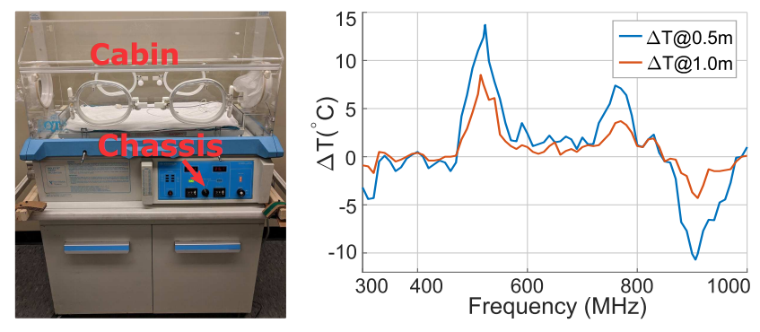
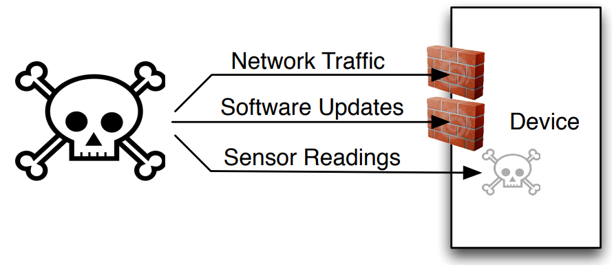
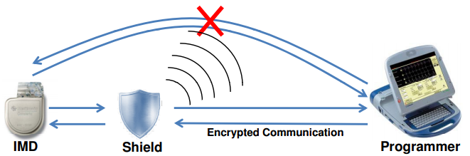
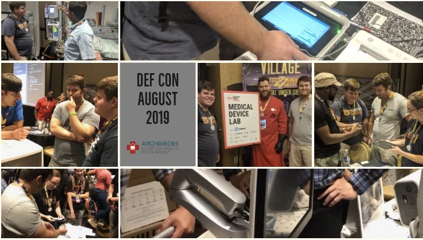

Healthcare and medicine security and privacy is one of the most important research area of SPQR Lab. We contribute to the security and healthcare communities by discovering potential security and privacy issues and raising attentions. We also develop and offer insights into defenses against such security and privacy issues.
In this project we investigate the reliability of temperature-based control systems from a security and safety perspective and show how unexpected consequences and safety risks can be induced by physical-level attacks on analog temperature sensing components. Specifically, we demonstrate that an adversary could remotely manipulate the temperature sensor measurements of an infant incubator by exploiting the unintended rectification effect that can be induced in operational and instrumentation amplifiers to control the sensor output, leading to potential safety issues.
Electromagnetic interference (EMI) affects circuits by inducing voltages on conductors. We show that with specially crafted EMI we can inhibit pacing and induce defibrillation shocks on implantable cardiac electronic devices. Our contribution to securing cardiac devices includes a novel defense mechanism that probes for forged pacing pulses inconsistent with the refractory period of cardiac tissue.
Implantable medical devices (IMDs) feature wireless communication which enable remote monitoring of patients’ vital signs and improve care providers’ ability to deliver timely treatment. Such wireless connectivity, however, can be exploited to compromise the confidentiality of the IMD’s transmitted data or to send the IMD unauthorized commands. In this project we design a device called the shield that sits near the IMD and acts as jammer-cum-receiver proxy. With the shield, we effectively provides confidentiality for private data and protects the IMD from unauthorized commands without modifying the IMD device itself.
The Archimedes Center for Medical Device Security was established to help manufacturers and industry experts navigate the operational hazards of cybersecurity implementation and prepare them for future challenges of FDA requirements. Archimedes is an independent, pioneering center focused on the education and advancement of medical device security where key industry players come together for learning in a safe place.
The Strategic Health IT Advanced Research Projects on Security (SHARPS) was an inter-disciplinary and multi-institutional collection of projects supported by the Office of the National Coordinator for Health IT in the Department of Health and Human Services. It developes technologies and policy insights concerning the requirements, foundations, design, development, and deployment of security and privacy tools and methods as they apply to health information technology.